No.Date
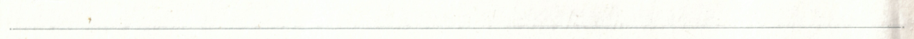


No.Date


No.
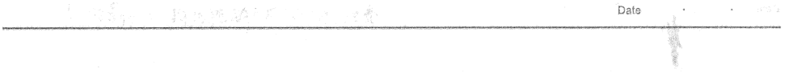
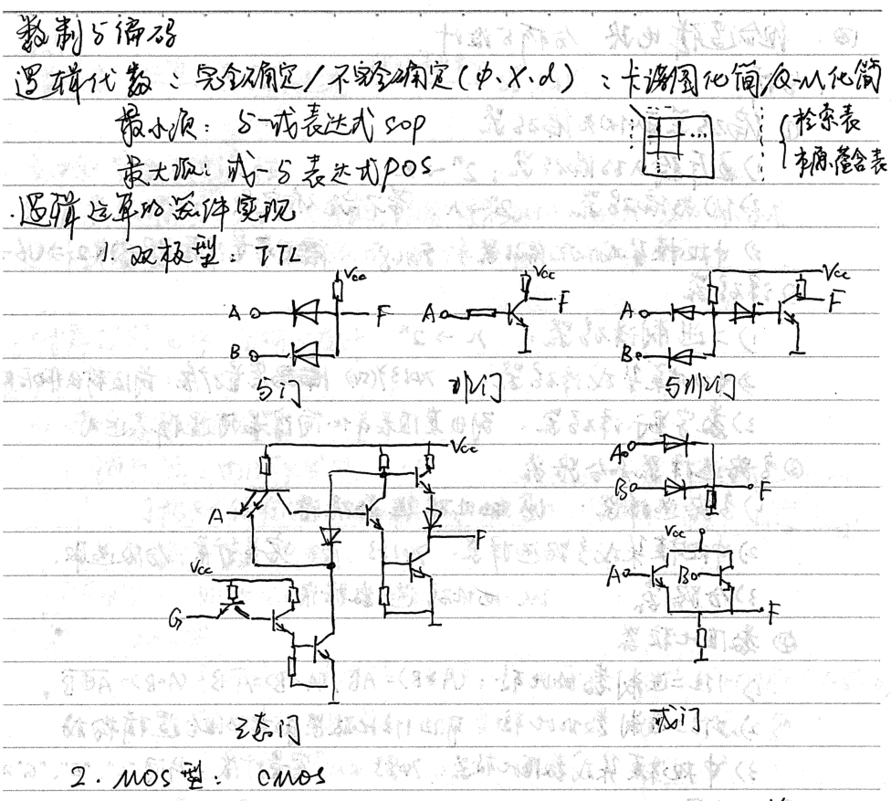

No No. Date Date 四，但合温弹电路 分析占设计， 2 1.分析 ①D 编码运和优先偏码器 1五斥論入的 码器：2 ～ 2优先偏码器：2-人.带不完不有定次。 雇客量扩展：18-3）*2=064） 3 中规模朵成优先编码器：74148 ② 译码器 》中相本莫集成泽码器：20137.5s）臟玛容量展：前级输出作后账选 32数字星示泽码器、別出真值表年化简得最同過輯表达式 ②多路选择器和分路器 1）多路选择器：以地址码选為据源！ 2）中视辣黄集成多路远择累：74153 容量扩展：分级选取. 32分路器 以以人地址码选数据宿， • ④ 数值比荻器 21住二进制数的比 ：（A>B）=AB，UACB:AB、4A-B2-原母？ 2） 2位二进制数作比鞋：可由1位比政器和其它但合遇輯构成

⑤ Adder and subtractor
1 Food adder: A..Bw, Chr=Sh.Cr 》Bit-by-bit carry adder: carry special transmission 3) Carry-ahead adder: Sa-Patcnd Gn~An'B. 4) Medium-view module integrated adder: 74283 Capacity expansion: letter and other transmission. 58421BCD code adder circuit: For numbers whose sum is greater than 9, a correction of 6 is required.
Entering a steady state: At the same time, Li made mistakes like this
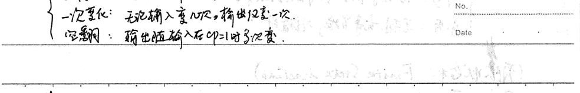
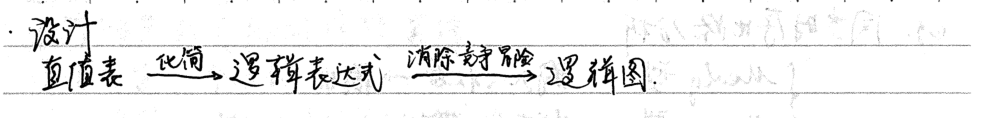
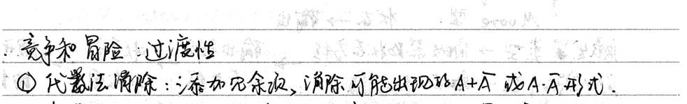
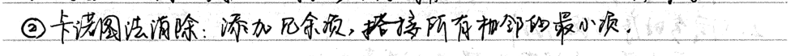

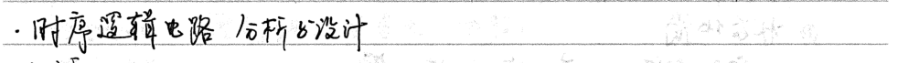

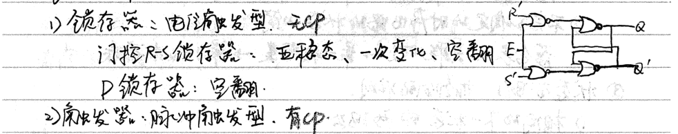
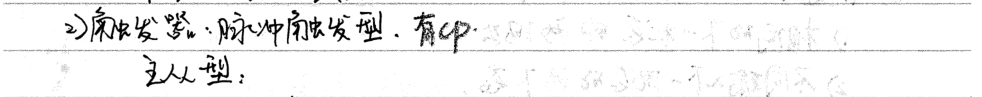
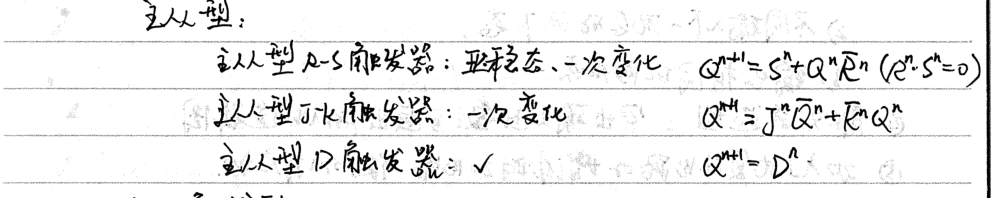

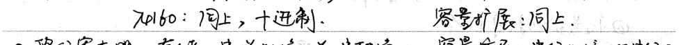
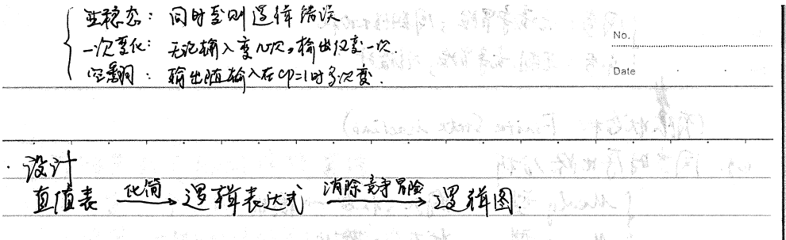
Because the signal generator reaches the signal generator: the return property or the energy transfer device (specific range) and then the XOR is combined, then three doses are produced -> ut feedback logic F=98-0d
(Synchronization: no sound risk; periodic high consumption No. No. Open: glitch, competition risk; no calculation Date. Date (Finite State Machine: Finite StateMachine) e9-Synchronization timing circuit analysis Input, state one output {Menly type, Moore type: state one output Trigger type-state equation of two generators, input length 3, state table, and generator state number. State diagram function 2. (Sequential circuit) design ① Draw the original state diagram and the original state table. ② State simplification 1) State simplification of the completely determined sequential circuit. 》The state of the incompletely determined timing ratio contains a table, an associated ratio, a maximum capacity class, and a minimized state storage table ③ State allocation: phase allocation rule. 1) Two sets of the next state of the phase 2) Two states of the next state of the different inputs, two states of the 32 output phase. ④ Generator type: output function; return FM ⑤ Add a power-on reset circuit or add additional circuits to make the F5M start automatically. 3. Sequence and safety: essential. ①Add an insulator to prevent time deviation. 21③ ① Time coordination of signals ③ Use bottom-driven circuit to reliably combine reset and set signals. ②y ④ Reliable clock signals. ②
No.Date
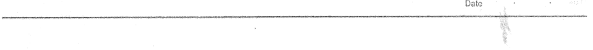
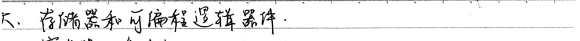
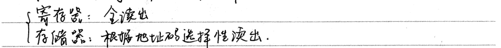
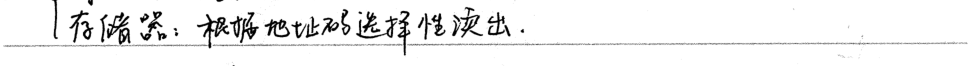
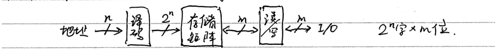
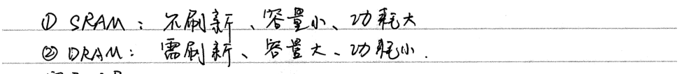
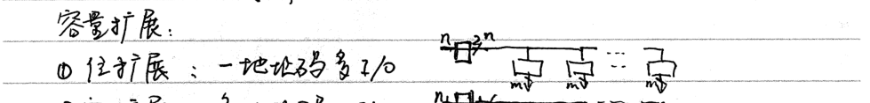
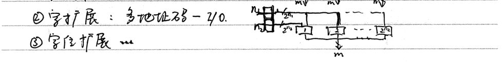

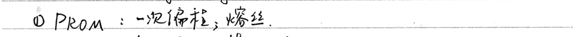
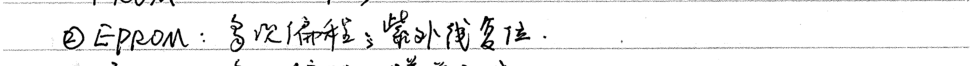
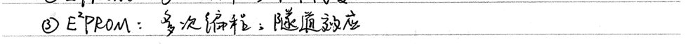


V PAL,GAL × P2A V V RDM

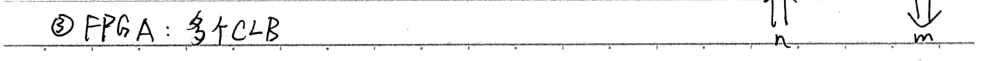